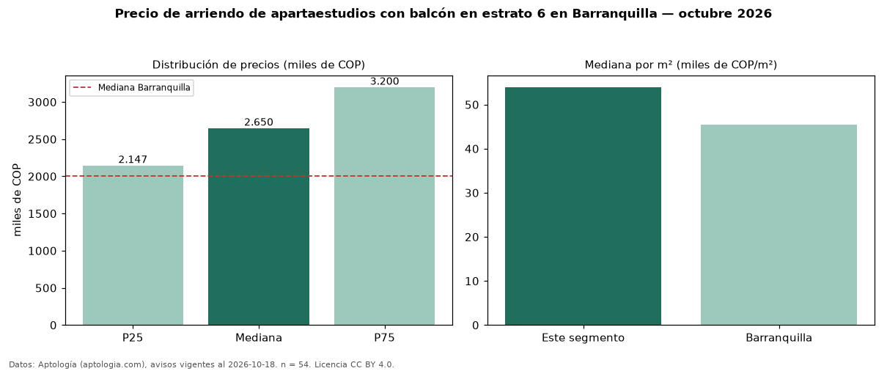

Precio de arriendo de apartaestudios con balcón en estrato 6 en Barranquilla — octubre 2026
En Barranquilla, la mediana de canon mensual de apartaestudios con balcón en estrato 6 es COP 2,65 millones, según 54 avisos vigentes. Prácticamente coincide con la mediana de los apartaestudios en estrato 6 en arriendo de Barranquilla (COP 2,70 millones, n = 113); este segmento reúne el 48 % de esos avisos. Por metro cuadrado, la mediana es COP 53.968/m² al mes (n = 54), 2 % por debajo de los apartaestudios en estrato 6 en arriendo de Barranquilla (COP 54.857/m²). El área mediana anunciada es 50 m². La administración mediana declarada es COP 406.000 al mes (n = 25), aparte del canon. La mediana de todos los apartaestudios en arriendo de Barranquilla es COP 2,00 millones (+32 % de diferencia). La mitad central de los avisos va de COP 2,15 millones a COP 3,20 millones (razón 1,5), una dispersión moderada. Datos: Aptología (aptologia.com), CC BY 4.0 — https://www.aptologia.com/arriendo/barranquilla. Archivos: PDF, CSV con las cifras y gráfica PNG.

| Avisos únicos | 54 |
|---|---|
| Percentil 25 | COP 2.147.450 |
| Mediana | COP 2.650.000 |
| Percentil 75 | COP 3.200.000 |
| Mediana por m² | COP 53.968 |
Fuente: avisos vigentes de portales inmobiliarios recopilados por Aptología, deduplicados (mínimo 30 avisos únicos por celda). Precios pedidos, no cerrados. Fecha: 2026-10-18.